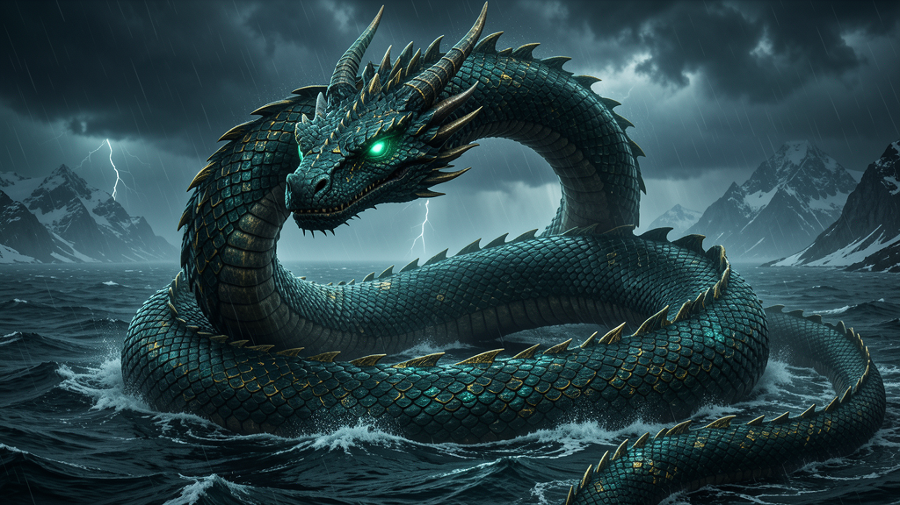

Routing and integration automation — the loop that encircles every system.

The World Serpent — Jörmungandr (Old Norse Jörmungandr, "huge monster"), also called Miðgarðsormr ("the Midgard/Wold Serpent"), is the second child of Loki and the jötunn Angrboða, brother of Fenrir and Hel (Gylfaginning 34). When the Æsir cast the three children out, they flung Jörmungandr into the deep ocean that encircles Midgard; there the serpent grew so great that, lying at the bottom, he encircles the whole world with his body and seizes his own tail.
The corrected saga (and the correction of the site's old "Urðar Serpent" misnomer): there is no attested name "Urðar Serpent" for Jörmungandr — the correct name is Miðgarðsormr. Twice he nearly meets Þórr: once when Þórr fished for him with Hymir's ox-head bait and Hymir cut the line (Hymiskviða), and once when Þórr, at Útgarða-Loki's hall, lifted the great cat that was in truth the World Serpent. At Ragnarök he rises, floods the land, and fights Þórr, who strikes him dead but then staggers only nine steps before succumbing to the serpent's venom (Gylfaginning 48, 51; Völuspá 56). Jörmungandr is the loop that encircles all — and the lesson for routing is to design the loop that touches every node.
Jörmungandr was cast into the sea and grew until his body encircled all of Midgard, tail in jaws. He is the original closed loop — every edge of the world is touched by the same coil. The agency lesson for routing and integration is to build the serpent's loop: a routing layer that connects every system to every system, with no node left dangling and no data falling into a gap. Most agencies wire point-to-point and leave dead ends; the World Serpent's fix is one encircling integration that touches all of them.
Jörmungandr's fix is routing automation that forms the loop — webhooks, triggers, and fan-out that connect every tool into a single coil, so a record entering anywhere arrives everywhere it must.
Routing and integration automation — the encircling loop connecting every system. Make.com + n8n ready.
Buy on the Marketplace → View all products